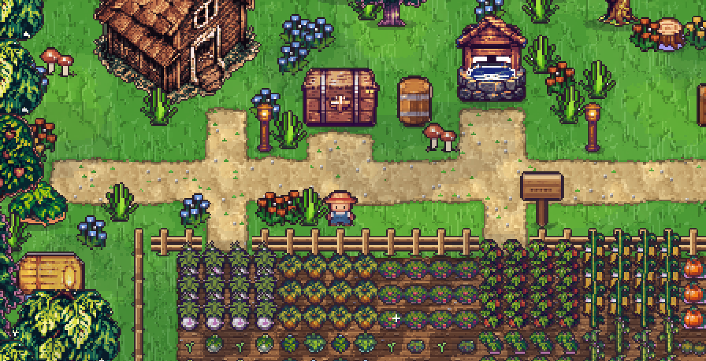
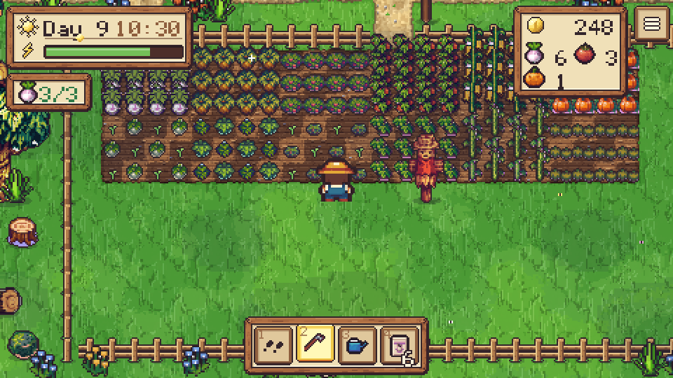
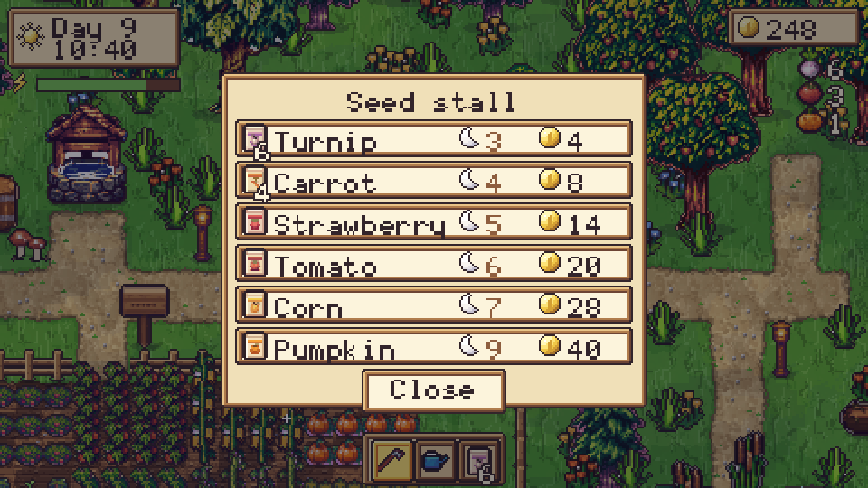
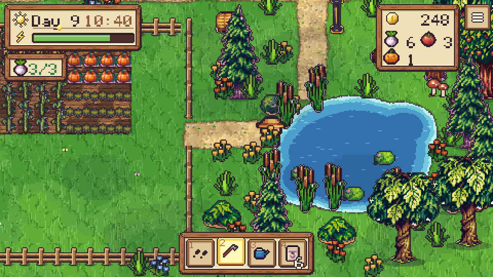
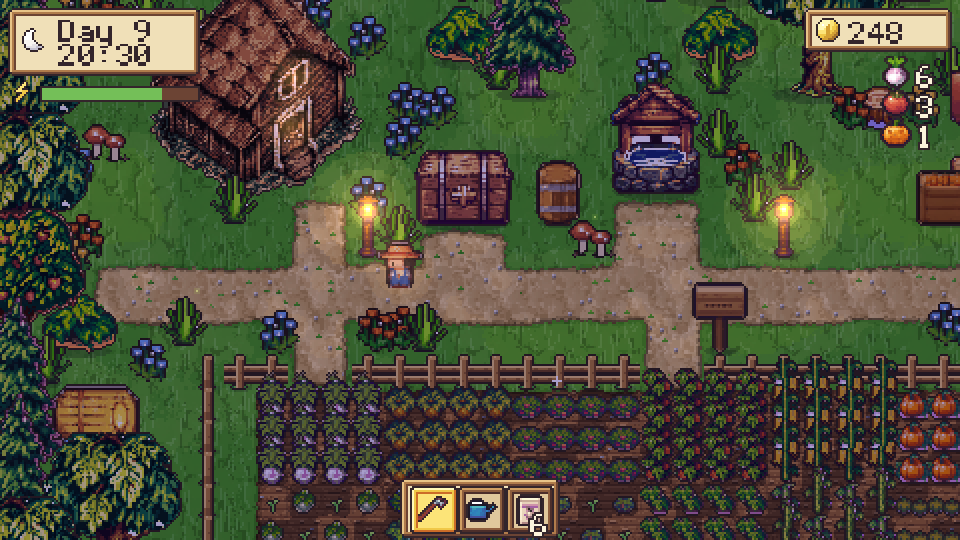

Early version · EazyD Volumes Vol. 1
Farm House
A small, cozy farm of your own. Till the soil, plant seeds, water them and sleep. Sell what you grow, buy better seeds and watch the field fill up.
Free in your browser, on desktop and phone. On a phone, turn it sideways. The game is in English, with a Dutch option on the title screen. Your farm is saved in your browser.
Six crops
Turnips grow in three nights, pumpkins take nine. Slow crops cost more seed money and pay back more.
One day at a time
Every action costs energy and the clock keeps moving. Go to bed in time, or you start the next day tired.
Sell and buy
Drop your harvest in the shipping chest for coins. Spend them at the seed stall on the next crop.
A living farm
Wind in the trees, a rippling pond, butterflies by day, lanterns and fireflies at night.
English and Dutch
Switch the language with the button on the title screen.
Tap or keys
Tap a tile and the farmer walks there and gets to work. Or use the keyboard.
Plant, water, sleep, harvest
A day takes a few minutes. There is no way to lose.

Your field
Watered crops grow one step each night. Ripe ones sparkle.

The seed stall
Each seed shows how many nights it needs and what it costs.

Room to wander
A pond, an orchard and flower meadows around the farm.

Evening falls
The light turns warm, then blue. Time to head home.
Controls
| Action | Phone / mouse | Keyboard |
|---|---|---|
| Walk and use a tile | Tap the tile | WASD or arrows, then Space |
| Pick a tool | Tap it in the bar | 1, 2, 3 or Tab |
| Pick a seed | Tap the seed bag again | 3 again |
| Sell, shop, sleep | Tap the chest, the stall, the house | Face it and press Space |
| Sound on / off | Use your device volume | M |
Ready to plant?
Farm House is the playable game of EazyD Volumes Vol. 1 and it is still growing. Your feedback shapes what comes next.
Made with AI tools. The code was written with Claude (Anthropic) as an AI assistant. The pixel art is AI-generated with Animagine XL 4 and the pixel-art-xl LoRA, on top of shapes drawn in code. The music is AI-generated with ACE-Step, the sound effects with Stable Audio Open. The font is Dauwpixel by EazyD Studio. The game stores your farm only in your own browser and sends nothing to a server.